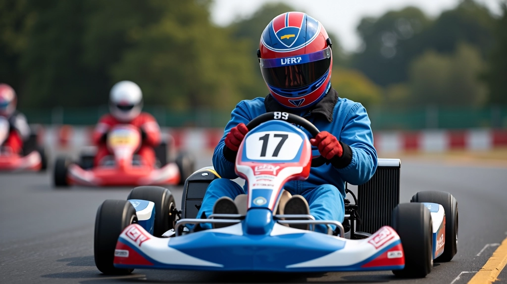
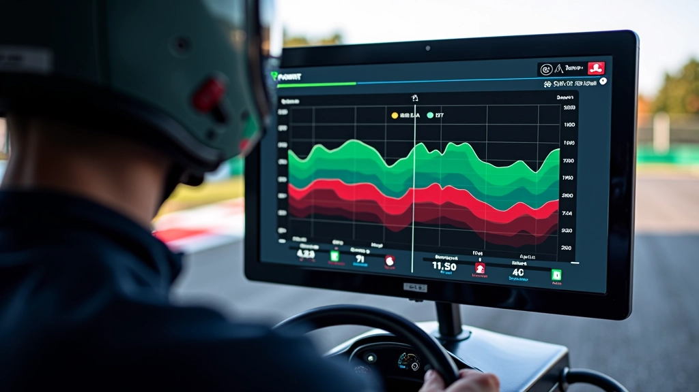

تحسين أداء المنعطفات باستخدام تحليل البيانات
تعلم كيفية استخدام بيانات التلمتري لتحسين سرعتك في المنعطفات وزيادة ثقتك على المضمار
المنعطفات هي حيث يتم الفصل بين السائقين الجيدين والسائقين العظماء. كل ميلي ثانية تخسرها في المنطقة قد تعني الفرق بين الفوز والخسارة. الخبر الجيد؟ إذا كنت تراقب بيانات التلمتري بشكل صحيح، فيمكنك بالفعل معرفة بالضبط أين تضيع الأداء.
في هذا الدليل، سنشرح كيفية قراءة بيانات منعطفاتك والعثور على نقاط التحسن الفعلية. لا نتحدث عن النظريات المجردة — سنركز على الأشياء التي يمكنك تطبيقها في جولتك التالية.

فهم سرعة المنعطف الأساسية
السرعة عند دخول المنعطف هي كل شيء. إذا دخلت ببطء جداً، فستفقد الوقت الذي لا يمكنك استرجاعه. إذا دخلت بسرعة كبيرة جداً، فستنزلق الإطارات وتفقد الالتصاق.
تظهر بيانات التلمتري سرعتك بالضبط عند نقطة الدخول. ابحث عن ذروة السرعة قبل بداية الكبح مباشرة. هذا الرقم يخبرك ما إذا كنت تتخذ القرار الصحيح بشأن وقت الكبح.
معظم السائقين يكبحون متأخرين جداً. إنهم يعتقدون أن الكبح المتأخر يعني السرعة — لكنه يعني في الواقع أنك تدخل المنعطف بسرعة كبيرة جداً وتفقد الثقة.
نقطة الكبح المثالية
ستختلف نقطة الكبح المثالية حسب المضمار والإطارات والطقس. لكن الطريقة للعثور عليها موحدة: ابحث عن السرعة التي تدخل بها المنعطف بثقة دون الشعور بأنك تنزلق. هذه السرعة ستشعر بأنها صحيحة — ستشعر بالالتصاق والتحكم.
ملاحظة مهمة
المعلومات الواردة في هذا الدليل مخصصة للأغراض التعليمية. كل مضمار وكل كارت مختلف. نوصي بالعمل مع مدرب متمرس لتحسين تقنيتك بناءً على بيانات محددة لحالتك الفريدة.
اقرأ المزيد من الأدلة

فهم بيانات التلمتري: دليل شامل للمبتدئين
شرح مفصل لكل المعادلات والقراءات الأساسية التي تظهر على شاشات تحليل البيانات، وكيفية استخدامها لتحسين أدائك.
اقرأ المزيد
اختيار النظام المناسب لتسجيل البيانات
دليل شامل لاختيار نظام تسجيل البيانات الذي يناسب احتياجاتك، والميزات المهمة التي يجب البحث عنها.
اقرأ المزيد
كيفية مقارنة أدائك مع المنافسين الآخرين
تعلم كيفية استخدام بيانات التلمتري للمقارنة مع سائقين آخرين وتحديد المناطق التي تحتاج لتحسين.
اقرأ المزيد
زاوية المقود والالتصاق
زاوية المقود مهمة لأنها تخبرك عن قوة جانبية تطبقها. كلما زادت زاوية المقود، كلما زادت القوة الجانبية على الإطارات. وفي مرحلة ما، تفقد الإطارات الالتصاق وتنزلق.
تظهر بيانات التلمتري زاوية المقود مقابل السرعة. البحث عن هذا المنحنى يخبرك بالضبط حيث يبدأ الانزلاق. معظم السائقين الجدد لا يدركون أنهم ينزلقون — يشعرون فقط بأن السيارة "غير مستقرة".
الهدف هو تقليل زاوية المقود أثناء الحفاظ على نفس السرعة تقريباً. هذا يعني إما أنك تدخل بسرعة أقل، أو أنك تستخدم المقود بكفاءة أكبر. كلاهما يعني أداء أفضل.
التسارع والخروج من المنعطف
الكثير من السائقين يركزون على دخول المنعطف ولا يفكرون في الخروج. لكن الخروج هو المكان الذي تستعيد فيه الأداء. إذا كنت تسارع متأخراً جداً، فستفقد السرعة. إذا كنت تسارع مبكراً جداً، فستنزلق الإطارات الخلفية.
ابحث عن نقطة التسارع الأمثل — حيث يمكنك تطبيق الدواسة الكاملة دون فقدان الالتصاق. هذه النقطة تختلف حسب كل منعطف. في منعطفات الزاوية الحادة، تحتاج للانتظار. في منعطفات الزاوية الواسعة، يمكنك أن تسارع أبكر.
بيانات التلمتري تعرض لك بالضبط متى بدأت بالتسارع. قارن هذا مع السائقين الأسرع — هل يسارعون قبلك أم بعدك؟ هذا الفارق الصغير قد يساوي عشر أجزاء من الثانية على الدورة الكاملة.

نصائح عملية للبدء
ركز على منعطف واحد أولاً
لا تحاول تحسين كل شيء في نفس الوقت. اختر منعطفاً واحداً وادرسه بعمق. ماذا تخبرك البيانات عن هذا المنعطف بالذات؟
قارن دوراتك الخاصة أولاً
قبل مقارنة نفسك مع الآخرين، قارن دوراتك الخاصة. ابحث عن الفروقات بين دورة جيدة ودورة سيئة في نفس المنعطف.
اختبر التغييرات واحداً تلو الآخر
إذا غيرت شيئين في نفس الوقت، لن تعرف أيهما أحدث الفرق. غيّر شيئاً واحداً، سجل البيانات، وانظر إلى النتائج.
تحقق من الإطارات والطقس
البيانات تتغير مع درجة حرارة الإطارات والطقس. قارن فقط البيانات التي تم جمعها في ظروف مماثلة تقريباً.
الخطوات التالية
تحسين أدائك في المنعطفات ليس عملية سريعة. يتطلب الصبر والتركيز والكثير من جمع البيانات. لكن إذا اتبعت هذه الخطوات البسيطة — ركز على نقطة واحدة، قارن البيانات الخاصة بك، واختبر التغييرات بشكل منهجي — فستحقق تحسناً حقيقياً.
تذكر: أفضل سائقي الكارت في العالم لا يثقون بحدسهم وحده. يثقون بالبيانات. والآن أنت تملك الأدوات لتفعل الشيء نفسه.

فريق لاب تايمز التحرير
فريق التحرير والمراجعة
كتبه فريق لاب تايمز للتحرير، متخصصون في توفير إرشادات عملية وسهلة الفهم حول تسجيل البيانات وتحليل اللفات.